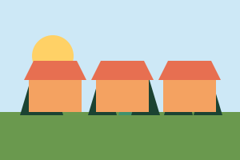

Portrait du mois
 |
Nadia Spécimen, apicultrice à Valfictif |
|---|---|
Depuis vingt ans, Nadia Spécimen s'occupe de trente ruches sur les hauts de la commune. Chaque samedi, elle vend son miel de forêt et de fleurs au marché. « Les abeilles m'ont appris la patience », dit-elle en souriant. Cet automne, elle propose pour la première fois un cours d'initiation pour les écoles. | |